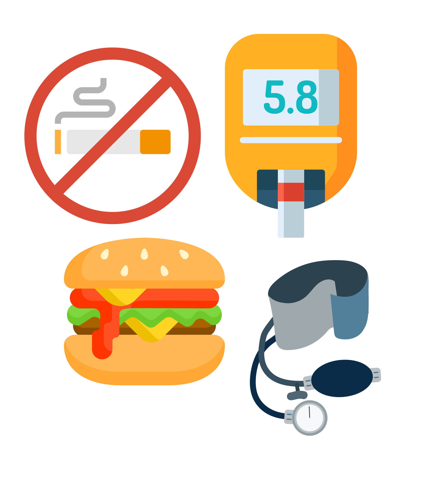

Cardiovascular Disease and Stroke
Cardiovascular diseases are diseases related to the heart and blood vessels such as heart attacks and strokes.
People with diabetes are at least twice as likely to have heart disease and develop heart disease at an earlier age.
Risks factors:
- Diabetes and Prediabetes
- Age
- High blood pressure
- Family history
- Smoking
- High cholesterol: high LDL, low HDL, high triglyceride levels
- Obesity/overweight
- Sedentary lifestyle
- Excessive stress

Prevention
Five steps to prevent onset or recurrence of cardiovascular disease:
- Lower your cholesterol levels
- Lower high blood pressure
- Increase your physical activity
- Quit smoking